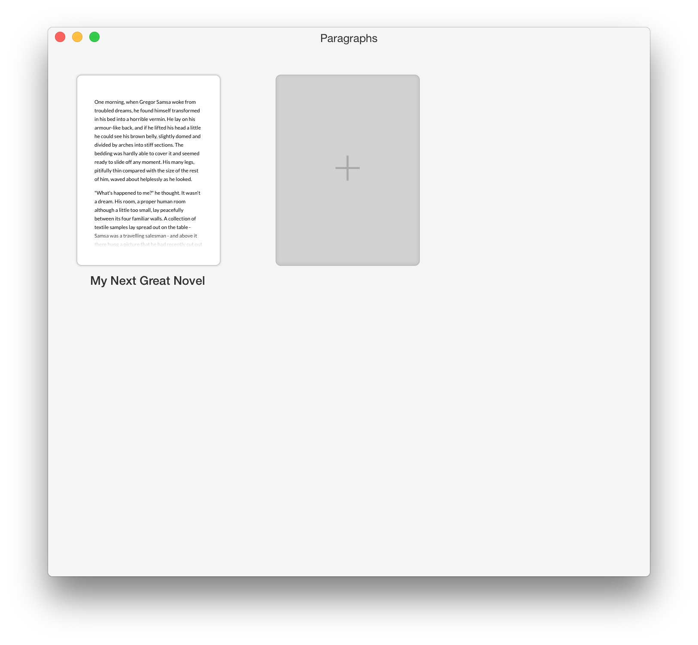
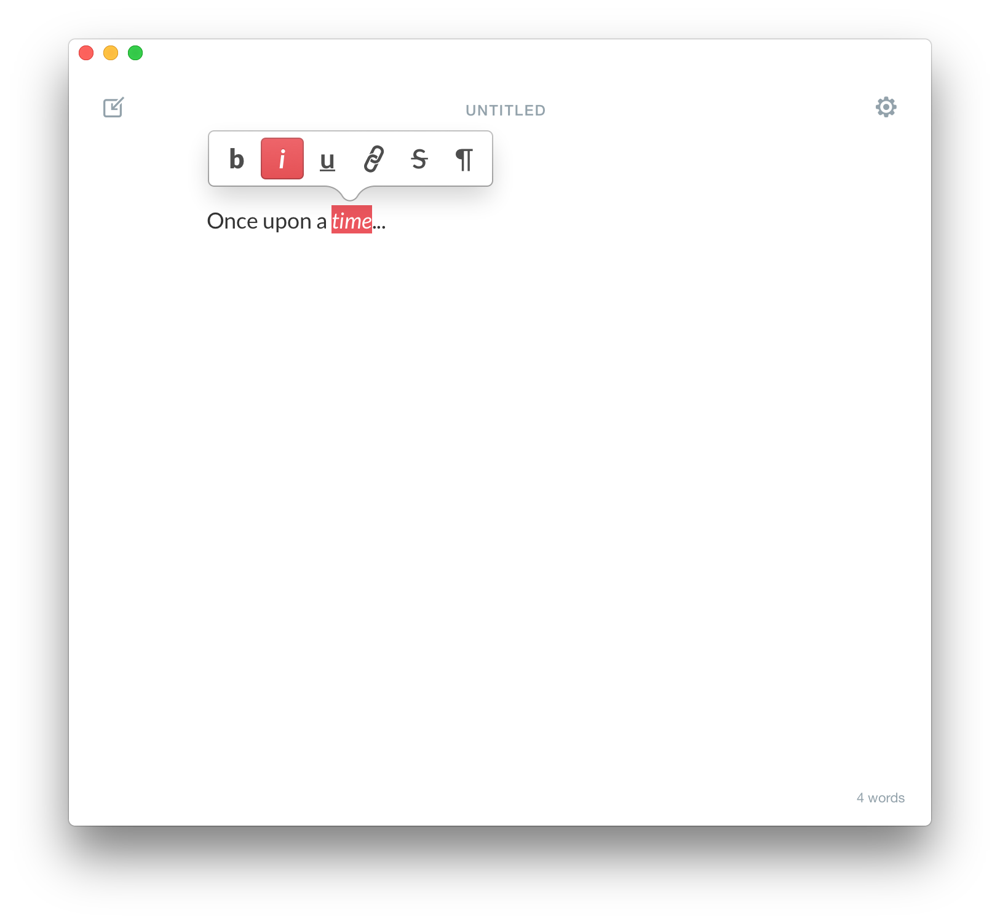
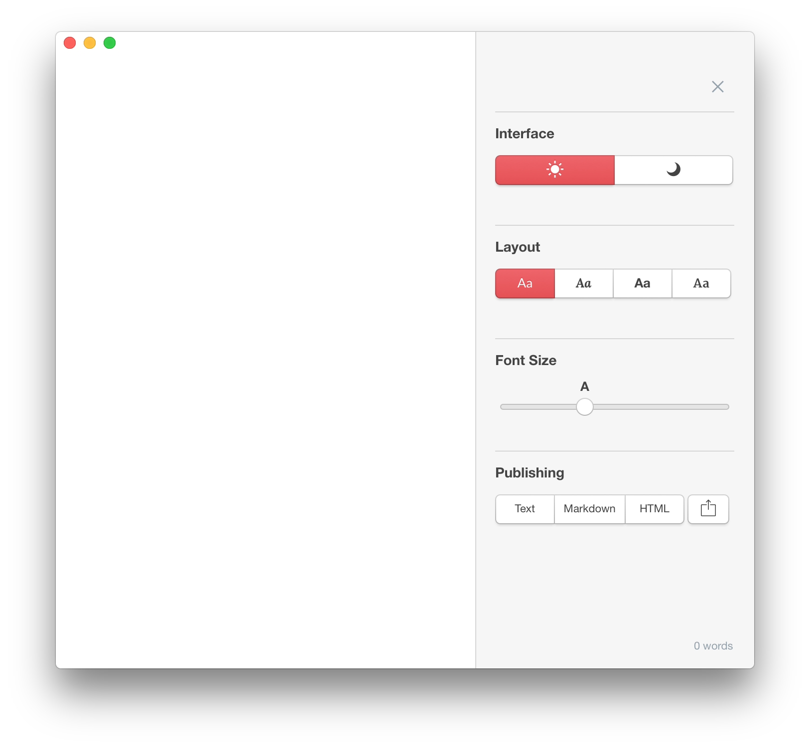

Paragraphs Help
Paragraphs for Mac lets you write without distractions and has all the tools you need to create your next great work. When you start typing, the interface disappears and all you see is what you type. Highlight any piece of text and a formating toolbar will appear. In addition to basic formatting options like bold, italic, and underline, clicking the paragraph button will display block formatting options for the entire paragraph.
Overview

Create and arrange documents on the Overview Screen. To create a new paper, press the "+" button. Hovering over a paper and pressing the "x" button will delete the paper. If you accidentally delete a paper, you can undo the action by navigating to the Edit menu and clicking Undo Delete Paper. Papers can be freely re-arranged by clicking and dragging a paper.
Editor

Highlight text to display the Formatting Toolbar. The Formatting Toolbar contains basic formatting options to help give your document structure. Because Paragraphs is a tool that's just for writing, there are no advanced layout or design options like you might be used to seeing in a word processor or desktop publishing application. Clicking on the paragraph button reveals paragraph formatting options such has headings and block quotes.
Settings

Clicking on the gear icon reveals the Settings Panel. Settings in Paragraphs are geared towards optimizing your writing experience. The Interface Mode option allows for toggling a dark view ideal for writing at night or in low light. Layout Styles allow you to choose from pre-selected layouts optimized for aesthetics and legibility. Publishing Options allow you to export your paper to various formats or share them with OS X’s built in sharing options.